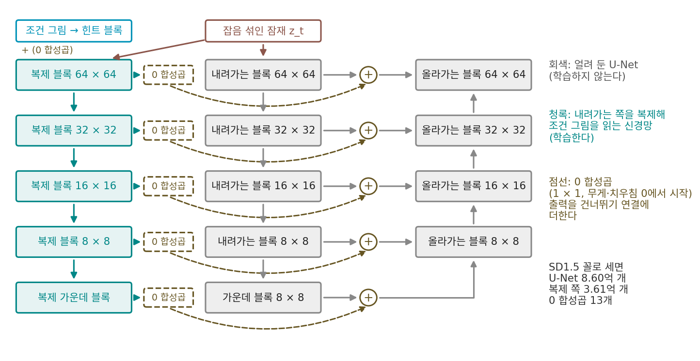

그림으로 조건 걸기: 참조 이미지 여러 장
이 장의 물음
「빨간 정육면체가 파란 공 위에」 같은 글은 이제 디퓨전이 읽을 수 있는 토큰 줄로 바뀐다. 그런데 그림 생성 도구를 실제로 쓰는 사람의 부탁은 글로 끝나지 않는 때가 많다. 「이 사진 속 강아지를, 저 사진 속 소파에 앉혀 줘.」 「이 사람이 이 자세를 하게.」 「이 그림의 화풍으로.」 강아지의 털 무늬, 소파의 천, 사람의 얼굴은 아무리 길게 적어도 똑같이 전해지지 않는다. 사진을 그대로 건네는 수밖에 없다.
사진을 건네면 물음이 줄줄이 생긴다.
- 윤곽선이나 자세 뼈대처럼, 그려질 그림과 자리까지 맞춰 놓은 그림은 신경망의 어디에 더해야 할까? 이미 잘 학습된 큰 모델을 망가뜨리지 않고 그 길을 새로 낼 수 있을까?
- 「이 얼굴」처럼 자리와 상관없이 따라야 하는 그림은? 글을 읽던 장치에 그림을 끼워 넣으면 될까?
- 그림 한 장을 토큰 몇 개로 줄이지 않고 통째로 보여 주면 어떨까? 그 값은 얼마일까?
- 그림을 여러 장 넣으면, 만들고 있는 그림과 참조, 그리고 참조끼리는 어떻게 구별될까?
- 「1번 사진의 강아지를 2번 사진의 소파에」라는 말에서 「1번」이 어느 사진인지는 누가 알아들을까?
ControlNet: 윤곽과 자세를 따로 읽는 복제 신경망
「왼팔은 허리에, 오른팔은 머리 위로, 고개는 왼쪽으로 조금」이라고 써서 그림을 뽑아 보면, 팔의 높이와 고개의 각도가 매번 달라진다. 글은 자세를 대략으로만 전한다. 그런데 자세를 정확히 담은 그림은 손쉽게 구할 수 있다. 사진에서 사람의 관절 점을 찾아 이은 뼈대 그림, 사진의 윤곽선만 남긴 그림, 깊이 지도가 그렇다. 이런 그림의 공통점은 만들 그림과 칸이 맞는다는 것이다. 뼈대 그림에서 왼쪽 위 칸에 손목이 있으면, 만들 그림에서도 그 칸에 손목이 있어야 한다. 이런 그림을 이미 잘 그리는 모델에 넣으려면 어디에, 어떻게 넣어야 할까?
역사: 짝 자료는 적고 모델은 크다
2023년 스탠퍼드의 장뤼민(Lvmin Zhang), 라오(Anyi Rao), 아그라왈라(Maneesh Agrawala)가 이 물음에 매달렸을 때 걸림돌은 자료의 크기였다. 윤곽선이나 자세와 사진을 짝지은 자료는 큰 것도 10만 장 안팎이었다. 논문은 이것이 Stable Diffusion 을 학습한 LAION-5B 보다 5만 배 작다고 적었다. 큰 모델을 그 적은 짝 자료로 통째로 더 학습시키면, 짝 자료에 지나치게 맞춰지거나 원래 잘하던 것을 잊어버린다(파국적 망각).
그들은 원래 모델을 얼려 두고, 잡음 예측 U-Net 의 내려가는 쪽 블록 12개와 가운데 블록 하나를 통째로 복제했다. 학습은 복제본만 한다. 복제본은 이미 수십억 장으로 다듬어진 가중치에서 출발하므로 적은 자료로도 그림을 잘 읽는다. 남은 문제는 복제본을 원래 모델에 잇는 순간이다. 아직 아무것도 배우지 않은 복제본의 출력을 그대로 더하면 원래 모델의 특징 지도에 엉뚱한 값이 섞인다. 그래서 둘 사이를 무게와 치우침이 모두 0에서 시작하는 1 × 1 합성곱, 곧 「0 합성곱」으로 이었다. 디퓨전 트랜스포머의 블록을 0에서 시작하는 문으로 끼우던 것과 같은 자세다. 학습 첫 걸음의 모델은 원래 모델과 똑같은 그림을 낸다.
학습 기록에는 이상한 장면이 하나 남았다. 모델은 조건 그림을 조금씩 따라가지 않았다. 처음 수천 걸음 동안 그림은 멀쩡하지만 윤곽선을 무시하다가, 논문 그림의 예에서는 6,133걸음째에 갑자기 윤곽선을 따르기 시작했다. 저자들은 이것을 「갑작스러운 수렴」이라 부르고 대개 1만 걸음 안에 일어난다고 적었다. 0 합성곱 덕분에 그 앞의 걸음들에서도 그림이 망가지지 않았기에 볼 수 있었던 장면이다.
복제한 인코더와 0 합성곱
U-Net 의 블록 하나가 특징 지도 h를 받아 F(h)를 내놓는다고 하자. ControlNet 을 붙인 블록은 이렇게 된다.
Z1, Z2가 0인 동안 둘째 항은 0이고, hout은 원래 블록의 출력 그대로다. Stable Diffusion 1.x 에 실제로 붙일 때는 복제본의 블록 13개(내려가는 쪽 12개 + 가운데 1개)가 저마다 0 합성곱을 거쳐, 그 해상도의 건너뛰기 연결과 가운데 블록 출력에 더해진다. 조건 그림은 512 × 512 픽셀에서 작은 합성곱 묶음(힌트 블록)으로 64 × 64 잠재 크기까지 줄인 뒤, 0 합성곱을 거쳐 복제본의 첫 입력에 더해진다.

ComfyUI 코드로 Stable Diffusion 1.x 꼴의 ControlNet 을 만들어 세면 매개변수가 3억 6,128만 개로, 원래 U-Net(8억 5,952만 개)의 42%다. 그 가운데 0 합성곱 13개가 1,148만 개, 조건 그림을 줄이는 힌트 블록이 109만 개이고 나머지는 복제한 블록들이다. 논문은 이 구성으로 학습하면 U-Net 만 학습할 때보다 GPU 메모리가 23%, 걸음당 시간이 34% 더 든다고 적었다. 얼린 쪽은 기울기를 계산할 필요가 없기 때문이다.
이렇게 얼린 큰 모델 곁에 내려가는 쪽을 복제해 조건 그림을 읽게 하고, 그 출력을 0에서 시작하는 연결로 원래 모델의 같은 자리에 더하는 신경망을 ControlNet (조건 그림을 읽는 복제 인코더 / ControlNet)이라 한다. 「같은 자리에 더한다」가 이 방법의 성격을 정한다. 덧셈은 칸끼리 한다.
ML에서: 여러 조건을 더하기
같은 모델에 자세와 깊이를 함께 걸고 싶으면, 따로 학습한 ControlNet 둘의 출력을 그냥 더한다. 논문은 「따로 무게를 매기거나 보간할 필요가 없다」고 적었다. ComfyUI 의 ControlNetApply 계열 노드는 ControlNet 출력에 세기(strength)를 곱해 더하고, 여러 개를 사슬로 이으면 출력들이 해상도마다 합쳐진다(comfy/controlnet.py 의 control_merge). 디퓨전 트랜스포머에도 같은 생각이 옮겨 갔다. FLUX 와 Qwen-Image 의 ControlNet 은 몸통 블록 몇 개를 복제해 그 출력을 그림 토큰의 같은 자리에 더한다(comfy/ldm/flux/controlnet.py, comfy/ldm/qwen_image/controlnet.py). 토큰도 패치 하나에 대응하므로, 「같은 칸끼리 더한다」는 성격은 그대로다.
문제 1. 먹지 대고 베끼기
원본 그림 위에 먹지와 새 종이를 겹치고 연필로 따라 그린다. 원본의 고양이 귀 끝은 종이 왼쪽 끝에서 5 cm, 위쪽 끝에서 3 cm 자리다. (가) 원본만 오른쪽으로 2 cm, 아래로 1 cm 밀어 놓고 베끼면 새 종이의 귀 끝은 어디에 생기는가? (나) 원본을 절반 크기로 복사해 놓고 베끼면? (다) 친구가 「이 고양이 얼굴로, 종이 오른쪽 아래에 크게 그려 줘」라고 하면 먹지로 할 수 있는가?

(가)는 왼쪽에서 7 cm, 위에서 4 cm 요. (나)는 고양이도 절반 크기로 그려지고요.

(다)도 원본을 오른쪽 아래로 옮겨 놓으면 되잖아.

「크게」는요? 먹지가 원본에서 옮겨 주는 건 무엇이죠?

원본이 놓인 자리와 크기 그대로의 선이에요. 크기를 바꾸려면 원본을 확대 복사부터 해야 해요. 결국 먹지는 「이 자리에 이 선」만 전하고, 「이 고양이를 아무 데나」는 못 전해요.

그래요. 먹지는 칸 맞춤 도구예요. 먹지가 전하는 건 원본 고양이의 생김새가 아니라 원본이 놓인 자리의 선이에요.

과제 양식 파일에 내용을 덮어쓰면 칸은 딱 맞는데, 그 양식을 다른 크기 종이에 쓰려면 양식부터 다시 만들어야 하는 거랑 같네요.
문제 2. 칸끼리 더하기
Stable Diffusion 1.x 는 512 × 512 그림을 64 × 64 잠재에서 그리고, ControlNet 의 출력은 64 × 64, 32 × 32, 16 × 16, 8 × 8 해상도의 건너뛰기 연결과 가운데 블록에 더해진다. (가) 뼈대 그림을 오른쪽으로 32 픽셀 옮기면, 각 해상도에서 더해지는 특징은 몇 칸 옮겨지는가? (나) 덧셈이 칸끼리 일어나려면 조건 쪽 특징 지도는 어떤 크기여야 하는가? (다) 0 합성곱 대신 무작위 값으로 시작한 합성곱으로 이으면, 학습 첫 걸음에 얼린 U-Net 의 올라가는 쪽은 무엇을 받는가?
(가)는 512 픽셀이 64칸이니까 한 칸이 8 픽셀, 32 픽셀이면 4칸이요. 그다음은 2칸, 1칸, 그리고 8 × 8 에서는 0.5칸이네요.

0.5칸은 칸 사이에 걸치는 거야. 가장 거친 해상도에서는 옮긴 걸 칸 하나로 나타내지 못하니까, 반쯤 섞인 값으로 들어가겠다.
(나)는요?
더하는 상대와 크기가 같아야 해요. 해상도마다 원래 특징 지도와 가로세로 칸 수, 채널 수가 같아야 칸끼리 더할 수 있어요. 그래서 복제본도 원래 블록과 같은 해상도 단계를 그대로 갖고, 조건 그림도 64 × 64 까지 줄여서 넣는 거고요.

(다)는 무작위로 시작해도 학습하면 금방 맞춰지지 않을까요? 값도 작을 테고요.
첫 걸음에 그 작은 무작위 값이 몇 군데에 더해지죠?

아, 열세 군데 모든 칸에요. 얼린 U-Net 은 그런 값을 본 적이 없으니까, 올라가는 쪽이 받는 특징 지도가 처음부터 흔들려요. 그럼 복제본이 받는 학습 신호도 「망가진 그림을 고쳐라」부터 시작하고요.
논문도 0 합성곱을 보통의 무작위 합성곱으로 바꾼 비교를 실었어요. 0에서 시작하면 첫 걸음의 모델이 원래 모델 그대로라는 게 핵심이에요.

팀 발표 자료에 새 팀원 슬라이드를 끼울 때, 빈 슬라이드로 끼워 두고 채워 가면 발표가 안 깨지는데, 아무거나 적어 끼우면 리허설부터 엉망이 되는 거네요.
문제 3. ControlNet 과 분류기 없는 가이던스
분류기 없는 가이던스는 걸음마다 조건을 넣은 예측 εc와 빈 조건의 예측 ε∅를 읽어 ε∅ + w(εc − ε∅)로 섞는다. 프롬프트를 비워 두고 뼈대 그림만 ControlNet 으로 넣는다. (가) ControlNet 출력을 두 예측 모두에 더하면 배율 w 는 무슨 일을 하는가? (나) 조건을 넣은 예측에만 더하면? (다) 논문은 해상도마다 ControlNet 출력에 64/h(h 는 그 블록의 한 변 칸 수)를 곱하고 배율을 낮추는 법을 냈다. h = 8, 16, 32, 64 에서 곱하는 수는?
(가)는 프롬프트가 비었으니 두 예측의 입력이 완전히 같아. εc = ε∅라서 차이가 0이고, w 를 얼마로 두든 결과는 ε∅ 그대로야.
그럼 (나)처럼 한쪽에만 넣으면 딱 좋은 거 아니에요?
그때 차이 εc − ε∅ 에는 무엇이 들어 있죠? 그리고 w 가 7.5라면요?
뼈대 그림이 만든 차이가 통째로 들어 있고, 그게 7.5배로 커져요. 뼈대를 7.5배 세게 따르라는 꼴이라 지나치게 세겠네요.

(다)는 8, 4, 2, 1. 거친 해상도에 더하는 몫을 키우고 고운 해상도는 그대로 둔 다음, 전체 배율을 낮춰 세기를 맞춘 거네.
논문은 이것을 「CFG 해상도 가중」이라 부르고, 프롬프트 없이도 뼈대를 따르는 그림이 나온다고 보였어요. 조건을 두 예측 가운데 어디에 넣느냐가 가이던스의 뜻을 바꾼다는 게 요점이에요.
시험 점수를 「과외 받은 반 − 안 받은 반」으로 견주는데, 두 반 모두 과외를 받으면 차이가 사라지고, 한 반만 받으면 그 차이를 일곱 배로 부풀려 보고하는 꼴이네요.